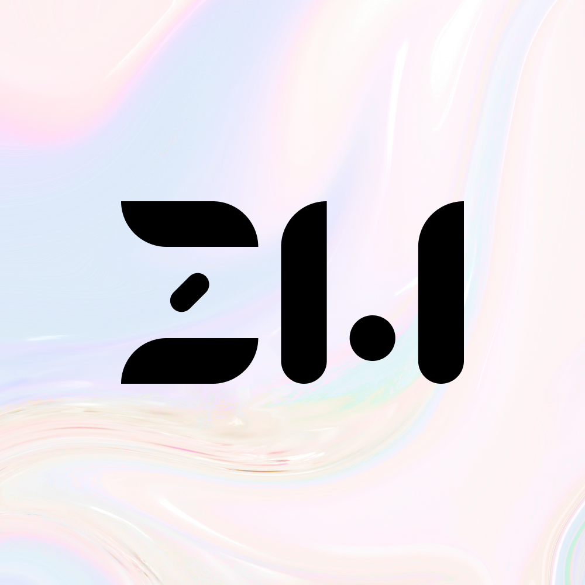

You've landed on the projects navigation page!
This portfolio website is up-to-date. You can visit it for an accurate representation of my web development abilities.

Although these projects are no longer functional, they have been kept online as an archive of early web development.